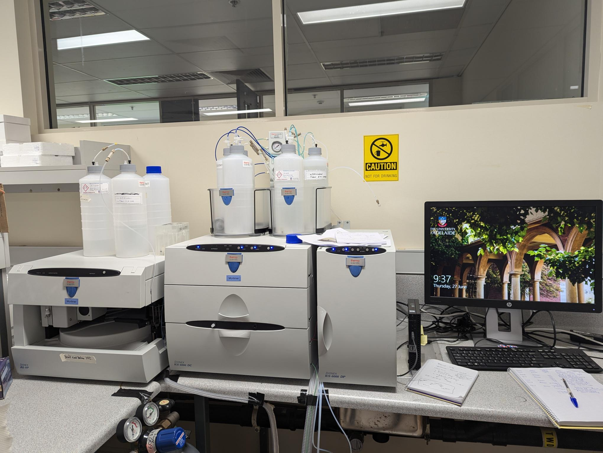

Given the bespoke nature of these projects, please contact us to discuss method development, sample preparation, and quotes. These can be paired with additional capabilities within the school, e.g. from Adelaide Analytical or Adelaide Microscopy. If you don't see what you need below, feel free to email Jenny (jenny.mortimer @ adelaide.edu.au) — we are continuing to grow our offerings.
Examples of services
- Biomass / cell wall characterisation:
- Monosaccharide composition (HPAEC-PAD)
- Polysaccharide structural analysis (PACE, MALDI, ESI), with special expertise in mannans, xylans, pectins and arabinogalactan proteins
- Preparation of enriched fractions or purification of oligosaccharides
- Spatial distribution of polysaccharides (immunofluorescence microscopy)
- Lignin composition (wet chemistry and TDA-MS)
- Glycosyl hydrolase functional characterisation
- Sphingolipid analysis, including glycan profiling
- Production of 13C-enriched plant material

Examples of instrumentation
- High Performance Anion Exchange Chromatography with Pulsed Amperometric Detection (HPAEC-PAD)
- HPLC
- Size Exclusion Chromatography (SEC)
- Refractive Index Detection (RID)
- Amino acid analysis
- Carbohydrate Gel Electrophoresis (PACE)
- Microscale Thermophoresis (MST, via Soares da Costa lab)
- Digital Droplet PCR (via Boden lab)
Additional available facilities
- 13CO2 custom plant growth chamber
- Pilot-scale vertical farm (PC2 compliant)
- Pilot-scale vertical farm (food grade)
- PC2 and standard growth chambers
- PC2 and standard glasshouses
- Tissue culture and plant transformation facilities
- Microbiology, molecular biology, protein expression